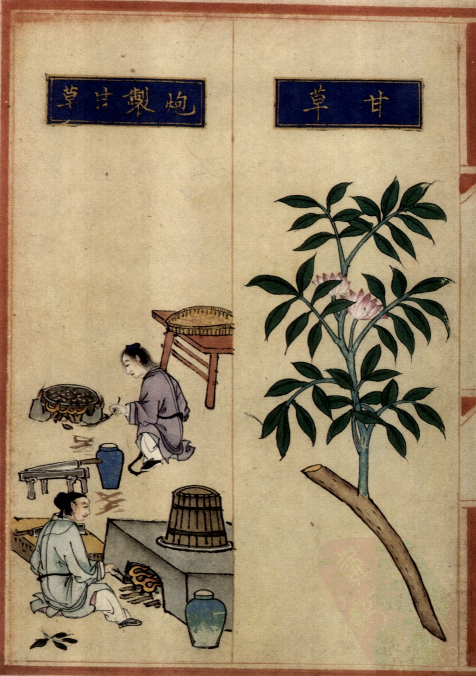
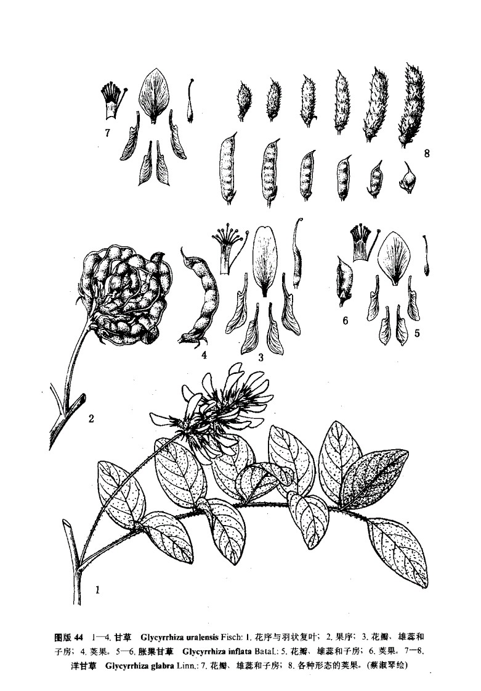

出现篇目
别名 蜜甘（《别录》）、蜜草（《别录》）、美草（《别录》）、蕗草（《别录》）、灵通（《记事珠》）、国老（《别录》）。
古代记载
《毛诗故训传》
苓，大苦。（《毛传》注《简兮》）
苓，大苦也。陆德明：苓，力丁反，即甘草，叶似地黄。（《毛传》注《采苓》）
《毛诗正义》
《释草》云：“蘦，大苦。”孙炎曰：“《本草》云：‘蘦，今甘草’，是也。蔓延生。叶似荷，青黄。其茎赤，有节，节有枝相当。或云蘦似地黄。”（《毛诗正义》疏《简兮》）
《诗集传》
苓、一名大苦、叶似地黄。 卽今甘草也。（《诗集传》集注《简兮》）
《本草纲目》
《别录》曰∶甘草生河西川谷积沙山及上郡。二月、八月除日采根，曝干，十日成。
陶弘景曰∶河西上郡，今不复通市。今出蜀汉中，悉从汶山诸地中来。赤皮断理，看之坚实者，是抱罕草，最佳。抱罕乃西羌地名。亦有火炙干者，理多虚疏。又有如鲤鱼肠者，被刀破，不复好。青州间有而不如。又有紫甘草，细而实，乏时亦可用。
苏颂曰∶今陕西、河东州郡皆有之。春生青苗，高一、二尺，叶如槐叶，七月开紫花似柰冬，结实作角子如毕豆。根长者，三、四尺，粗细不定，皮赤色，上有横梁，梁下皆细根也。采得去芦头及赤皮，阴干用。今甘草有数种，以坚实断理者为佳。其轻虚纵理及细韧者，不堪，惟货汤家用之。谨按∶《尔雅》云∶蘦，大苦。郭璞∶蘦，似地黄。又《诗·唐风》云∶采苓采苓，首阳之巅，是也。蘦与苓通用。首阳之山在河东蒲县，乃今甘草所生处相近，而先儒所说苗叶与今全别，岂种类有不同者乎？李时珍曰∶按∶沈括《笔谈》云∶《本草注》引《尔雅》大苦之注，为甘草者，非矣。
郭璞之注，乃黄药也，其味极苦，故谓之大苦，非甘草也。甘草枝叶悉如槐，高五、六尺，但叶端微尖而糙涩，似有白毛，结角如相思角，作一本生，至熟时角拆，子扁如小豆，极坚，齿啮不破，今出河东西界。寇氏《衍义》亦取此说，而不言大苦非甘草也。以理度之，郭说形状殊不相类，沈说近之。今人惟以大径寸而结紧断纹者，为佳，谓之粉草；其轻虚细小者，皆不及之。刘绩《霏雪录》，言安南甘草大者如柱，土人以架屋，不识果然否也？"
当代记载 《中国植物志》
甘草，（Glycyrrhiza uralensis）， 被子植物门，豆科，甘草属。多年生草本；根与根状茎粗状，直径1-3厘米，外皮褐色，里面淡黄色，具甜味。花期6-8月，果期7-10月。产东北、华北、西北各省区及山东。常生于干旱沙地、河岸砂质地、山坡草地及盐渍化土壤中。蒙古及俄罗斯西伯利亚地区也有。模式标本采自西伯利亚。根和根状茎供药用。

<补遗雷公炮制便览>

<中国植物志>